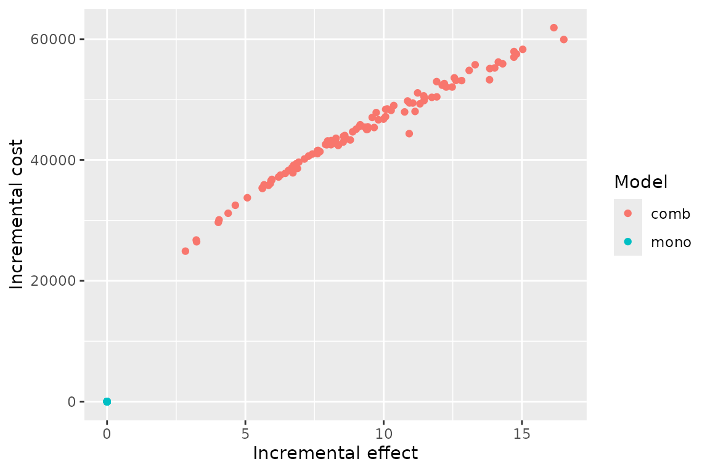
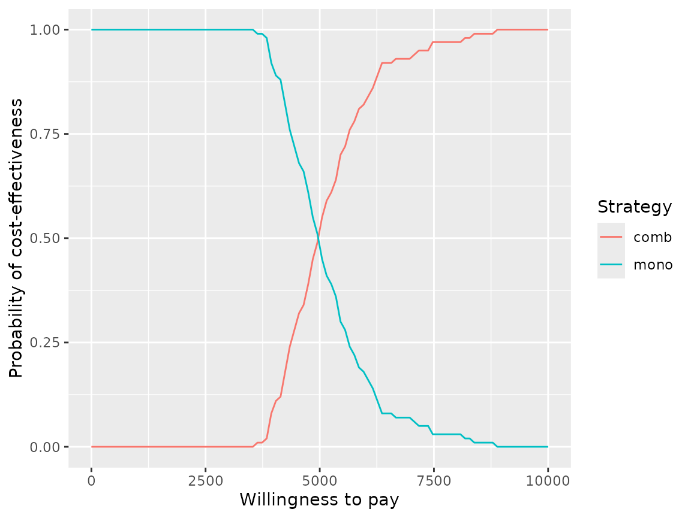
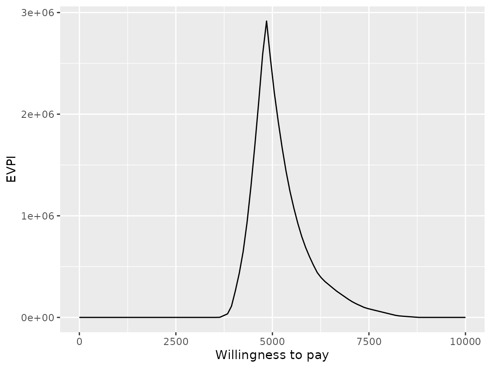
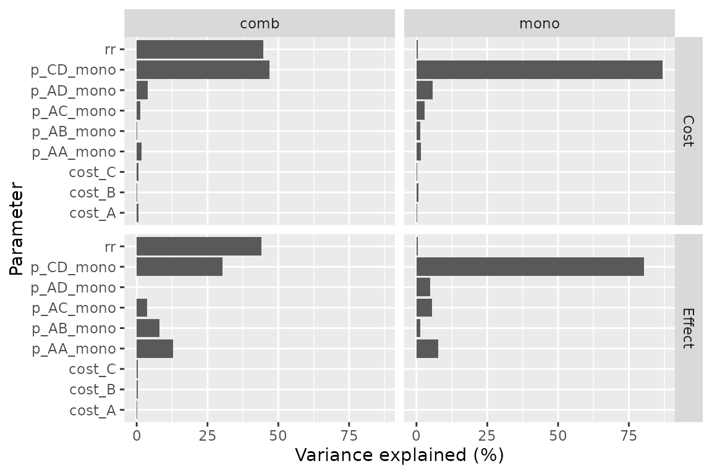
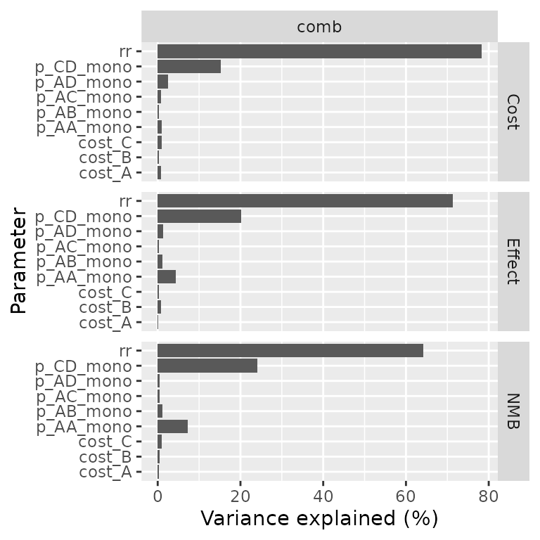

Probabilistic Uncertainty Analysis
2024-09-11
Source:vignettes/e_probabilistic.Rmd
e_probabilistic.RmdThis vignette shows how to transform the deterministic Markov model
presented in vignette("c-homogeneous", "heemod") in a
probabilistic model.
Model definition
We will start by re-specifying the deterministic model of HIV therapy
described previously (a monotherapy strategy mono and
combined therapy strategy comb).
But instead of defining transition probabilities and state values
directly in define_transition() or
define_state() (as in the previous vignette), parameters
will be defined first in a define_parameters() step. This
is because only parameters defined this way can be resampled in a
probabilistic analysis.
param <- define_parameters(
rr = .509,
p_AA_mono = .721,
p_AB_mono = .202,
p_AC_mono = .067,
p_AD_mono = .010,
p_BC_mono = .407,
p_BD_mono = .012,
p_CD_mono = .250,
p_AB_comb = p_AB_mono * rr,
p_AC_comb = p_AC_mono * rr,
p_AD_comb = p_AD_mono * rr,
p_BC_comb = p_BC_mono * rr,
p_BD_comb = p_BD_mono * rr,
p_CD_comb = p_CD_mono * rr,
p_AA_comb = 1 - (p_AB_comb + p_AC_comb + p_AD_comb),
cost_zido = 2278,
cost_lami = 2086,
cost_A = 2756,
cost_B = 3052,
cost_C = 9007
)We need to define p_AA_mono and p_AA_comb
in define_parameters() because we will need to resample
that value. Only values defined with define_parameters()
can be resampled. So we cannot use the complement alias C
to specify p_AA_comb in define_transition(),
as we did before.
mat_trans_mono <- define_transition(
p_AA_mono, p_AB_mono, p_AC_mono, p_AD_mono,
0, C, p_BC_mono, p_BD_mono,
0, 0, C, p_CD_mono,
0, 0, 0, 1
)
#> No named state -> generating names.
mat_trans_comb <- define_transition(
p_AA_comb, p_AB_comb, p_AC_comb, p_AD_comb,
0, C, p_BC_comb, p_BD_comb,
0, 0, C, p_CD_comb,
0, 0, 0, 1
)
#> No named state -> generating names.State definition remains the same in this example.
state_A <- define_state(
cost_health = 2756,
cost_drugs = dispatch_strategy(
mono = cost_zido,
comb = cost_zido + cost_lami
),
cost_total = discount(cost_health + cost_drugs, .06),
life_year = 1
)
state_B <- define_state(
cost_health = 3052,
cost_drugs = dispatch_strategy(
mono = cost_zido,
comb = cost_zido + cost_lami
),
cost_total = discount(cost_health + cost_drugs, .06),
life_year = 1
)
state_C <- define_state(
cost_health = 9007,
cost_drugs = dispatch_strategy(
mono = cost_zido,
comb = cost_zido + cost_lami
),
cost_total = discount(cost_health + cost_drugs, .06),
life_year = 1
)
state_D <- define_state(
cost_health = 0,
cost_drugs = 0,
cost_total = discount(cost_health + cost_drugs, .06),
life_year = 0
)Strategies must be first defined and run as in a standard deterministic analysis.
strat_mono <- define_strategy(
transition = mat_trans_mono,
state_A,
state_B,
state_C,
state_D
)
#> No named state -> generating names.
strat_comb <- define_strategy(
transition = mat_trans_comb,
state_A,
state_B,
state_C,
state_D
)
#> No named state -> generating names.
res_mod <- run_model(
mono = strat_mono,
comb = strat_comb,
parameters = param,
cycles = 50,
cost = cost_total,
effect = life_year
)Resampling distributions
Now we can define the resampling distributions. The following parameters will be resampled:
- Relative risk.
- Costs (such that cost are always positive).
- Transition probability from AIDS to death.
- The transition probabilities from state A.
Since the log of a relative risk follows a lognormal distribution,
relative risk follows a lognormal distribution whose mean is
rr and standard deviation on the log scale can be deduced
from the relative risk confidence interval.
Programmed as:
rr ~ lognormal(mean = .509, sdlog = .173)Usually costs are resampled on a gamma distribution, which has the property of being always positive. Shape and scale parameters of the gamma distribution can be calculated from the mean and standard deviation desired in the distribution. Here we assume that mean = variance.
This can be programmed as:
Proportions follow a binomial distribution that can be estimated by
giving the mean proportion and the size of the sample used to estimate
that proportion with
p_CD ~ binomial(prob = .25, size = 40).
Finally multinomial distributions are declared with the number of individuals in each group in the sample used to estimate the proportions. These proportions follow a Dirichlet distribution:
p_AA + p_AB + p_AC + p_AD ~ multinomial(721, 202, 67, 10)
rsp <- define_psa(
rr ~ lognormal(mean = .509, sdlog = .173),
cost_A ~ gamma(mean = 2756, sd = sqrt(2756)),
cost_B ~ gamma(mean = 3052, sd = sqrt(3052)),
cost_C ~ gamma(mean = 9007, sd = sqrt(9007)),
p_CD_mono ~ binomial(prob = .25, size = 40),
p_AA_mono + p_AB_mono + p_AC_mono + p_AD_mono ~ multinomial(721, 202, 67, 10)
)Run probabilistic model
Now that the distributions of parameters are set we can simply run the probabilistic model as follow:
pm <- run_psa(
model = res_mod,
psa = rsp,
N = 100
)
#> Resampling strategy 'mono'...
#> Resampling strategy 'mono'...
#> Resampling strategy 'comb'...
#> Resampling strategy 'comb'...The average results are computed. In theory these values are more
accurate than simple estimates because of non-linearities. An optional
threshold can be passed to summary() to
compute net monetary benefit.
summary(
pm,
threshold = c(1000, 5000, 6000, 1e4))
#> 2 strategies run for 50 cycles.
#>
#> Initial state counts:
#>
#> A = 1000L
#> B = 0L
#> C = 0L
#> D = 0L
#>
#> Counting method: 'life-table'.
#>
#>
#>
#> Counting method: 'beginning'.
#>
#>
#>
#> Counting method: 'end'.
#>
#> Values:
#>
#> cost_health cost_drugs cost_total life_year
#> comb 98596802 78631062 93982666 18018.117
#> mono 48940582 19899736 49170846 8735.617
#>
#> Net monetary benefit difference:
#>
#> 1000 5000 6000 10000
#> mono 35529.32 0.000 0.00 0.00
#> comb 0.00 1600.678 10883.18 48013.18
#>
#> Efficiency frontier:
#>
#> mono -> comb
#>
#> Differences:
#>
#> Cost Diff. Effect Diff. ICER Ref.
#> comb 44811.82 9.2825 4827.56 monoResult interpretation
The results of the analysis can be plotted on the cost-effectiveness plane. We can see there seem to be little uncertainty on the costs compared to the uncertainty on the effects, resulting in an uncertainty cloud that looks like a line.
plot(pm, type = "ce")
And as cost-effectiveness acceptability curves or EVPI:
plot(pm, type = "ac", max_wtp = 10000, log_scale = FALSE)
plot(pm, type = "evpi", max_wtp = 10000, log_scale = FALSE)
A covariance analysis can be performed on strategy results:
plot(pm, type = "cov")
#> Loading required namespace: mgcv
#> Warning in compute_prop_var(mgcv::gam(formula = form_effect, data = .data)):
#> Parameter excluded because of perfect collinearity: p_AD_mono.
Or on the difference between strategies:
plot(pm, type = "cov", diff = TRUE, threshold = 5000)
#> Warning in compute_prop_var(mgcv::gam(formula = form_nmb, data = .data)): Only
#> 99% of variance explained, results may be inaccurate.
As usual plots can be modified with the standard ggplot2
syntax.
library(ggplot2)
plot(pm, type = "ce") +
xlab("Life-years gained") +
ylab("Additional cost") +
scale_color_brewer(
name = "Strategy",
palette = "Set1"
) +
theme_minimal()
Parallel computing
Resampling can be significantly sped up by using parallel computing. This can be done in the following way:
- Define a cluster with the
use_cluster()functions (i.e.use_cluster(4)to use 4 cores). - Run the analysis as usual.
- To stop using parallel computing use the
close_cluster()function.
Results may vary depending on the machine, but we found speed gains to be quite limited beyond 4 cores.
Interface with BCEA and SAVI
To compute EVPPI the results can also be exported with
export_savi() in a format compatible with the SAVI software (Sheffield
Accelerated Value of Information).
The results can be post-processed by the BCEA package
with the run_bcea() function.
bcea <- run_bcea(pm, plot = TRUE, Kmax = 10000)
#> Loading required namespace: BCEA
#> No reference selected. Defaulting to first intervention.
summary(bcea)
#> NB: k (wtp) is defined in the interval [0 - 10000]
#>
#>
#> Cost-effectiveness analysis summary
#>
#> Reference intervention: comb
#> Comparator intervention: mono
#>
#> Optimal decision: choose comb for k < 4840 and mono for k >= 4840
#>
#>
#> Analysis for willingness to pay parameter k = 10000
#>
#> Expected net benefit
#> comb 38185327
#> mono 86198503
#>
#> EIB CEAC ICER
#> comb vs mono -48013177 0 4827.6
#>
#> Optimal intervention (max expected net benefit) for k = 10000: mono
#>
#> EVPI -1.5648e-09